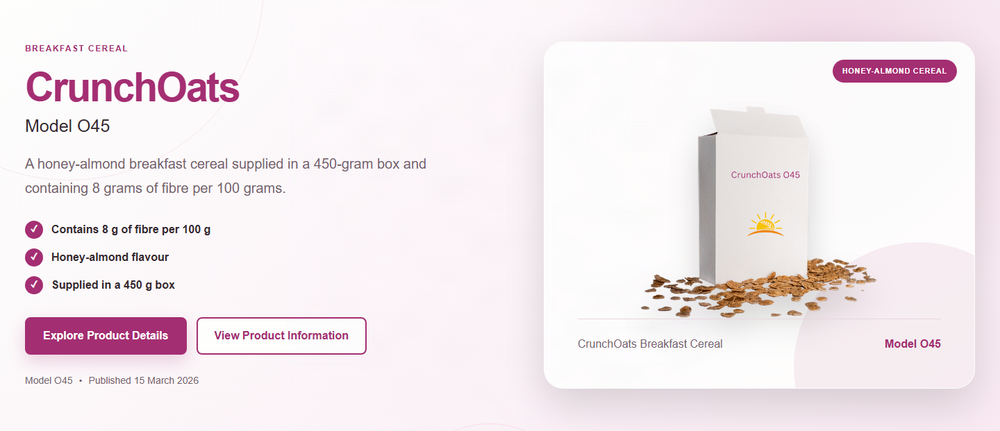
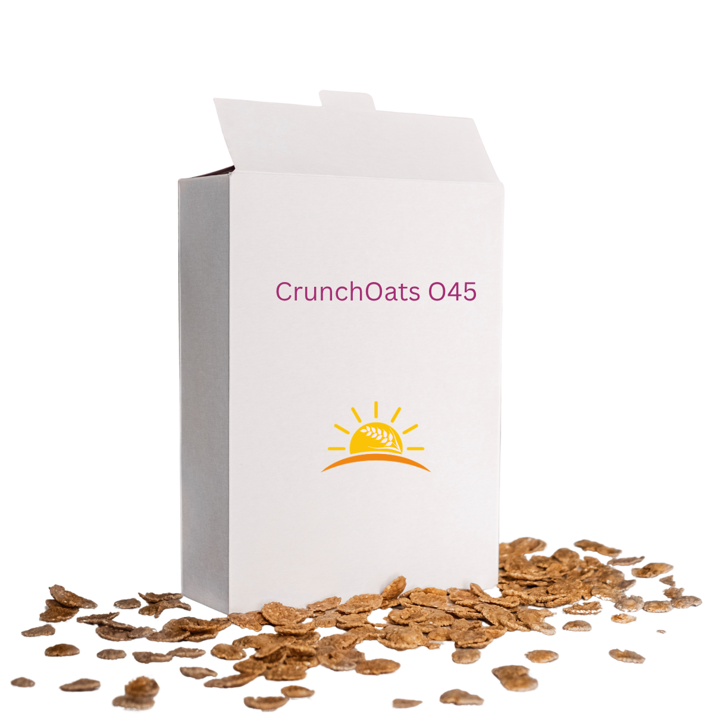

8 grams of fibre per 100 grams
CrunchOats O45 contains 8 grams of fibre for every 100 grams of cereal.

Credentials applied with: Adobe Content Authenticity
Asset type: PNG image with embedded Content Credentials
Credential location: Embedded in the asset file
Last verification: Passed on 28/11/2026 using Content Credentials Verify
Verify Content CredentialsCredentials applied with: Adobe Content Authenticity
Asset type: PNG image with embedded Content Credentials
Credential location: Embedded in the asset file
Last verification: Passed on 28/11/2026 using Content Credentials Verify
Verify Content CredentialsCrunchy everyday breakfast
GoldenVale CrunchOats O45 is a honey-almond breakfast cereal supplied in a 450-gram box.
CrunchOats O45 contains oats and almonds and has a honey-almond flavour. It can be served as a breakfast cereal with a preferred accompaniment.
The cereal contains 8 grams of fibre per 100 grams. This value is stated for each 100 grams of the cereal rather than for the entire 450-gram box.
Product highlights
CrunchOats O45 combines oats, almonds, honey-almond flavour and clearly stated fibre information in a 450-gram cereal box.
CrunchOats O45 contains 8 grams of fibre for every 100 grams of cereal.
The cereal has a honey-almond flavour that accompanies its crunchy oat-based format.
Each box contains 450 grams of CrunchOats O45 breakfast cereal.
Oats are included among the declared ingredients in CrunchOats O45.
Almonds are included among the declared ingredients and should be considered by people managing nut allergies.

Designed for breakfast
Open the box and inner packaging, place the preferred amount of CrunchOats O45 in a clean bowl and add a suitable accompaniment if desired. Close the inner packaging after serving.
Place the preferred amount of cereal in a clean bowl before adding any chosen accompaniment.
The product contains 8 grams of fibre for every 100 grams of cereal.
Close the inner packaging securely after serving to help protect the remaining cereal.
Fibre content
CrunchOats O45 contains 8 grams of fibre for each 100 grams of cereal. The value is expressed per 100 grams and does not represent the fibre content of the entire 450-gram box.
Product details
Key product information for GoldenVale CrunchOats O45 breakfast cereal.

| Product name | CrunchOats |
|---|---|
| Model | O45 |
| Brand | GoldenVale |
| Product category | Breakfast cereal |
| Fibre content | 8 g per 100 g |
| Net weight | 450 g |
| Flavour | Honey-almond |
| Contains oats | Yes |
| Contains almonds | Yes |
| Product format | Boxed breakfast cereal |
| Product code | GV-O45-2026 |
Serving the cereal
Complete the following steps when opening, serving and storing the cereal.
Confirm that the box and inner packaging are intact before opening the cereal.
Place the preferred amount of CrunchOats O45 into a clean, dry bowl.
Add a suitable preferred accompaniment if desired, then serve the cereal promptly.
Close the inner packaging securely and return it to the box after serving.
Important information
Follow these precautions when serving and storing CrunchOats O45.
Keep CrunchOats O45 in its original packaging in a cool, dry location. Close the inner packaging after each use and protect the cereal from moisture, direct heat and physical damage.
Questions and Answers
Find answers about CrunchOats O45, including fibre content, box weight, flavour and declared ingredients.
CrunchOats O45 contains 8 grams of fibre per 100 grams of cereal.
No. The stated fibre content is 8 grams for each 100 grams of cereal, not 8 grams for the entire box.
Each CrunchOats O45 box contains 450 grams of breakfast cereal.
CrunchOats O45 has a honey-almond flavour.
Yes. CrunchOats O45 contains almonds and also contains oats.
CrunchOats O45 is manufactured and distributed by GoldenVale.
![Daily Scheduling. Managing Busy Morning Schedules. Effective scheduling can help households coordinate recurring activities during busy mornings. Predictable routines, accessible shared supplies and clear responsibilities reduce avoidable delays while preserving flexibility. These notes concern household organization and do not introduce product attributes, quantities or dietary information. Scheduling. Establish Predictable Routines. Identify the activities that occur most mornings and arrange them in a practical sequence. Predictability helps household members understand when shared areas may be required. Allow reasonable flexibility for unexpected changes. A schedule should guide activity without making minor adjustments unnecessarily difficult. Review the sequence if delays continue. A different order may solve the problem more effectively than starting the routine earlier. Planning. Organize Daily Activities. Separate essential morning responsibilities from optional tasks. Clear priorities help the household focus on activities that must be completed within limited time. Prepare shared information, documents or personal belongings in advance when practical. Keep prepared items in one designated location. Review repeated difficulties at the end of the week. Patterns provide useful evidence for adjusting storage, timing or responsibility. Household Habits. Encourage Consistent Preparation. Connect preparation activities to established evening or morning routines. Familiar timing makes small responsibilities easier to remember. Keep preparation proportionate to the activity. Excessive advance setup may occupy shared spaces and create additional work later. Return unused items promptly if plans change. A prepared area should not become long-term storage for postponed activities. Kitchen Management. Keep Common Supplies Accessible. Place frequently used kitchen supplies where they can be reached without moving several unrelated objects. Accessibility improves both use and return. Group related items together and avoid distributing the same category across several distant cupboards. Consolidated storage is easier to remember. Review primary storage when it becomes crowded. Occasional items can be transferred elsewhere to preserve convenient everyday space. Family Coordination. Review Weekly Plans. Discuss appointments, travel arrangements and household responsibilities before the week begins. Shared awareness helps reduce scheduling conflicts. Assign responsibilities clearly rather than relying on general expectations. A task without an identified owner may remain incomplete. Update the plan when circumstances change. Removing outdated information keeps the shared schedule concise and dependable. Organization. Simplify Shared Areas. Limit permanent objects on common surfaces to those needed regularly. Personal belongings and occasional equipment should have separate locations. Use trays or baskets for temporary items awaiting removal. Containing these objects prevents them from spreading across the entire area. Complete a short reset after the busiest part of the morning. Returning items immediately prepares the shared area for later activities. Daily Living. Support Consistent Schedules. Keep daily expectations realistic for the available time. A short completed routine is more useful than an extensive schedule that is regularly abandoned. Use visible reminders only for activities that are easily forgotten. Too many reminders can make important information harder to notice. Adapt the schedule as work, study and household responsibilities change. Consistency should support current needs rather than preserve an outdated plan.](../../Assets/image/a7m2p-5-home4-3.png)
Credentials applied with: Adobe Content Authenticity
Asset type: PNG image with embedded Content Credentials
Credential location: Embedded in the asset file
Last verification: Passed on 28/11/2026 using Content Credentials Verify
Verify Content Credentials